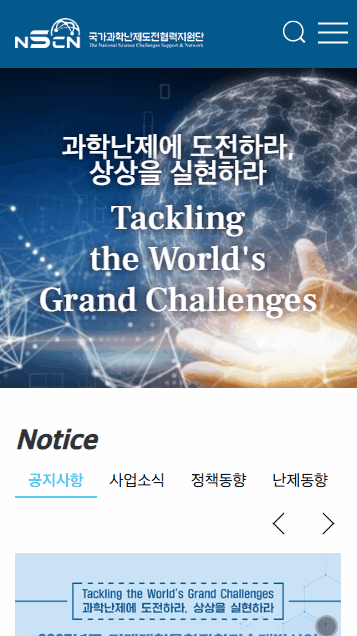
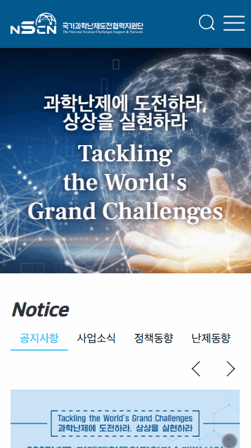
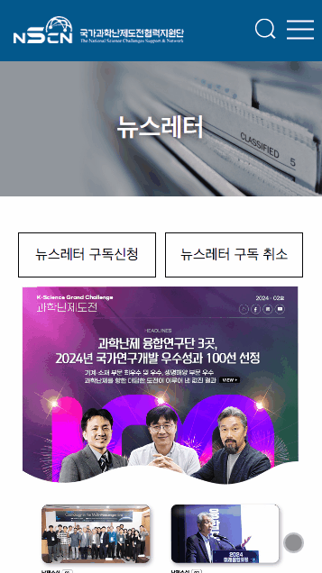
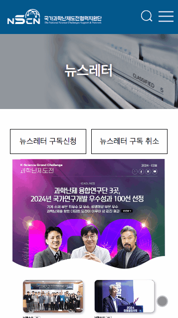

-
기간
2021.06 - 2021.08
-
참여도
60%
-
담당
퍼블리싱 : UI/UX 디자인과 퍼블리싱을 모두 담당하며, 기획부터 개발 연동까지 전 과정을 경험한 프로젝트였습니다.
사용스킬
HTML,CSS, JQUERY, PHP
1프로젝트 개요
한림원의 의뢰로 진행된 국가과학난제도전 홈페이지 프로젝트에 참여하여, UI/UX 디자인부터 퍼블리싱까지 전반적인 프론트엔드 작업을 담당하였습니다. 기획 단계부터 디자인, 퍼블리싱, 개발자와의 연동 과정까지 전체 프로세스를 경험한 프로젝트입니다.
2주요 구현 내용
 

다수의 페이지에서 탭 기능을 jQuery로 구현하고, 슬라이드 표현을 위해 Swiper 라이브러리를 활용하여 사용자 인터페이스의 직관성을 높이고, 다양한 디바이스에서도 원활한 기능을 제공할 수 있도록 최적화하였습니다.
 

dataTable을 활용하여 데이터 형태에 따라 테이블을 커스텀하고, 사용자 입력에 따라 실시간으로 테이블 내용이 업데이트되는 방식으로 처음 구현해 보았으며, 이를 통해 데이터 처리와 테이블 구조에 대한 이해를 한층 깊게 할 수 있었습니다.
3작업 중 어려움 & 해결법
문제 디자인 시안이 완전히 확정되지 않은 상태에서 퍼블리싱을 병행해야 해, 이후 수정이 반복되며 코드 정리가 어려웠습니다. 또한, 개발자의 PHP 변환 과정에서 마크업 구조가 일부 변경되어 스타일이 깨지는 등의 문제가 발생했고, 작업 방식의 차이로 협업에 혼선이 있었습니다.
해결 기획 단계부터 퍼블리싱 작업에 참여하며, 디자이너·기획자·개발자와의 협업이 원활하게 이루어질 수 있도록 의사소통에 집중했습니다. 수정에 유연하게 대응할 수 있는 마크업 구조를 설계하고, 반복적인 피드백 과정을 통해 퍼블리싱 결과물이 PHP 환경에서도 정확하게 구현되도록 조율하며 작업을 마무리했습니다.
4결과 및 성과
디자인 기획부터 개발 연동까지의 전체 프로세스를 처음으로 경험하며 실무 감각 강화
기획자의 요구사항을 바탕으로 한 UI 설계와 하드코딩 기반 퍼블리싱을 안정적으로 수행
퍼블리싱 결과물이 PHP 환경에서도 일관되게 적용되도록 반복적인 협업을 통해 완성도 향상
5링크